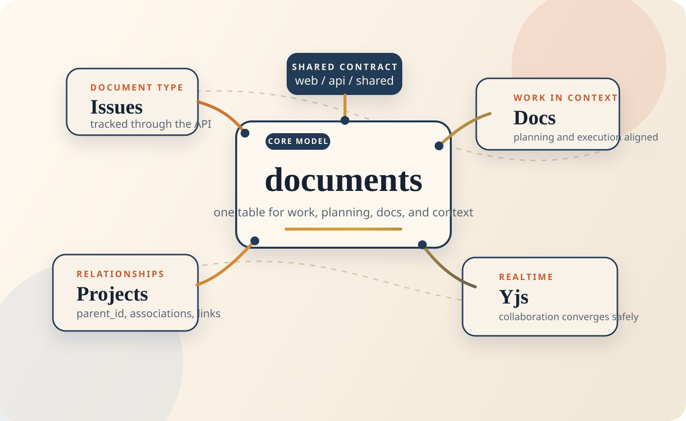

ShipShape Demo

Architecture, audit findings, and a practical improvement strategy for a unified work-and-collaboration system.
Approach
web/, api/, and shared/Architecture
web/shared/api/Data Model
Instead of separate main tables for issues, projects, docs, and sprints, Ship stores them in one central documents table.
parent_id models structural nesting.
document_associations and document_links layer meaning on top.
Request Flow
POST request
documents
Realtime
Assessment
web / api / shared splitshared/ is valuable, but not yet fully authoritativeAudit
| Area | Main Finding | Implication |
|---|---|---|
| Type safety | Strict mode is on, but API routes rely heavily on casts | Type guarantees are weaker than they appear |
| Frontend performance | The initial bundle is still too large | Slower first load and heavier critical path |
| Database and API | Graph-heavy flows raise query cost and are likely bottlenecks | Scalability risk grows with data volume and concurrency |
| Testing | Coverage exists, but reliability and full-suite completion are weak | The safety net is not mature enough |
Performance
Scalability
Query fan-out grows in relationship-heavy flows, especially when the system has to traverse the graph around the central documents table.
Latency is acceptable on the sampled endpoints, but graph-heavy endpoints are the ones most likely to become bottlenecks as scale increases.
Quality
Positioning
Strategy
Reduce inconsistency around how documents relate to each other.
Make shared/ more authoritative so the frontend and backend cannot drift.
Reduce multi-source state risk and improve behavior under concurrency and growth.
Increase confidence in changes and improve real usability.
Conclusion
Ship does not need a new architecture first. It needs to fully realize the one it already has.
Discussion